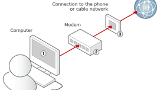

Se llama World Wide Web (abreviada WWW) en informática a una red de alcance mundial, que consiste en un complejo sistema de hipertextos e hipermedios interconectados entre sí y a los que puede tenerse acceso mediante una conexión a Internet y un conjunto de software especializado.
El software necesario para visitar la WWW es un navegador o explorador, tales como Internet Explorer, Mozilla Firefox, Google Chrome, etc., que representa en una serie de ventanas dotadas de texto y multimedios cada página web visitada. Estas últimas suelen requerir de una dirección html (HyperText Markup Language, o lenguaje de marcas de hipertexto) que inicia con las siglas www.

La World Wide Web, comúnmente referida como “la Web” o “la Red”, se desarrolló entre 1889 y 1990, por los cientificos de CERN (Organización Europea para la Investigación Nuclear) en Ginebra, Suiza, y fue publicada en 1993. Desde entonces, este nuevo espacio virtual ha crecido y se ha multiplicado hasta convertirse en el principal medio de consulta de información digital y de telecomunicaciones del mundo contemporáneo.
